fig = pygmt.Figure()
fig.basemap(projection='X12c/12c', region = [0, 100, 0, 20],
frame = ['S', 'xa20f10+lSpeed+pc=+u km/s+a-30'])
fig.show(crop=0.5, width="80%")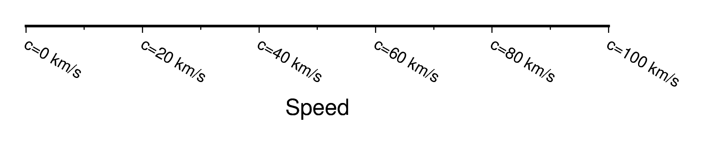
frame オプションは柔軟性が高く，さまざまな表現ができます．ここではそれを実例をもとに紹介します．
frame オプションは3つの要素を取るリストあるいはタプルとして，
frame = [ '(direction)', 'x(option-for-axis)', 'y(option-for-axis)']という形式で指定します．
(direction) は東西南北（左右上下）の軸を描画するかどうかの設定です．大文字 WSEN であれば軸名（ラベル）・annotation（数値等）・ティックマークを表示し，小文字 wsen であれば軸とティックマークのみを表示します．また，(direction) に +t(title) とするとグラフ上部にタイトル文字 (title) を表示します．
x軸とy軸のオプション (option-for-axis) には，以下の3つの主要要素があります． - a: 軸の数値を表示する間隔を指定します．Major tickmark （ティックマークのうち長いほう）も数値と同時に表示されます． - f: Minor tickmark （ティックマークのうち短い方）の間隔を指定します． - g: グラフ内にグリッドを引く間隔を指定します．
これらの記号の後には間隔の数値が入ります．たとえば x軸に20ごとに数値を打ち，10ごとにminor tickmark, 10ごとにグリッドラインを引きたいのであれば， 'xa20f10g10' と指定します． ただし，数値は省略できます．省略された場合にはGMTが region の上下限から適当に判断します．
いくつかの例を示しておきます．
import pygmt
fig = pygmt.Figure()
fig.basemap(projection='X12c/12c', region=[0, 100, 0, 20],
frame = ['WS', 'xafg', 'yafg'])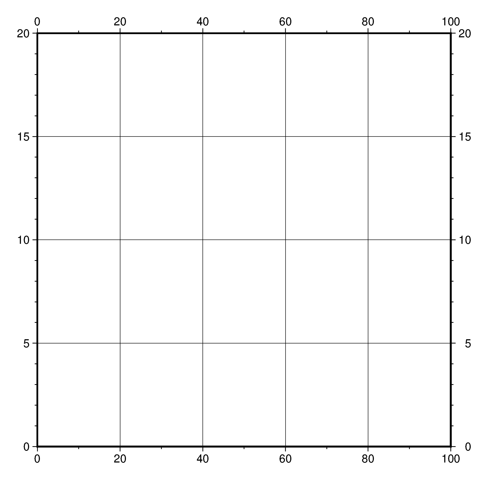
import pygmt
fig = pygmt.Figure()
fig.basemap(projection='X12c/12c', region=[0, 100, 0, 20],
frame = ['WSen', 'xafg', 'yafg'])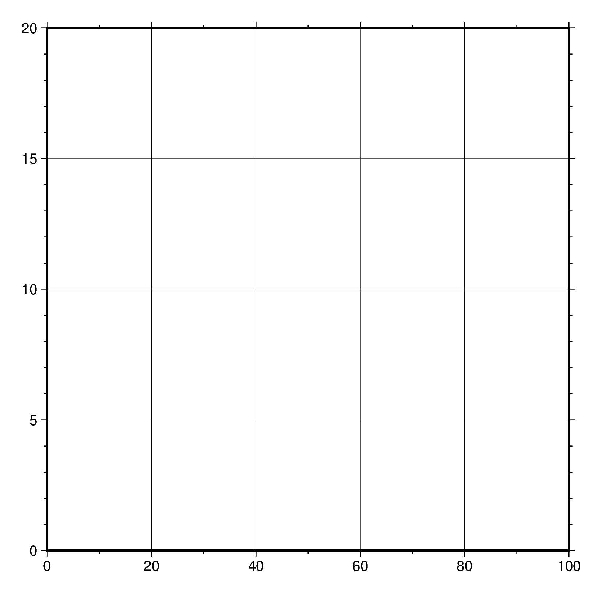
import pygmt
fig = pygmt.Figure()
fig.basemap(projection='X12c/12c', region=[0, 100, 0, 20],
frame = ['wsEN', 'xafg', 'yafg'])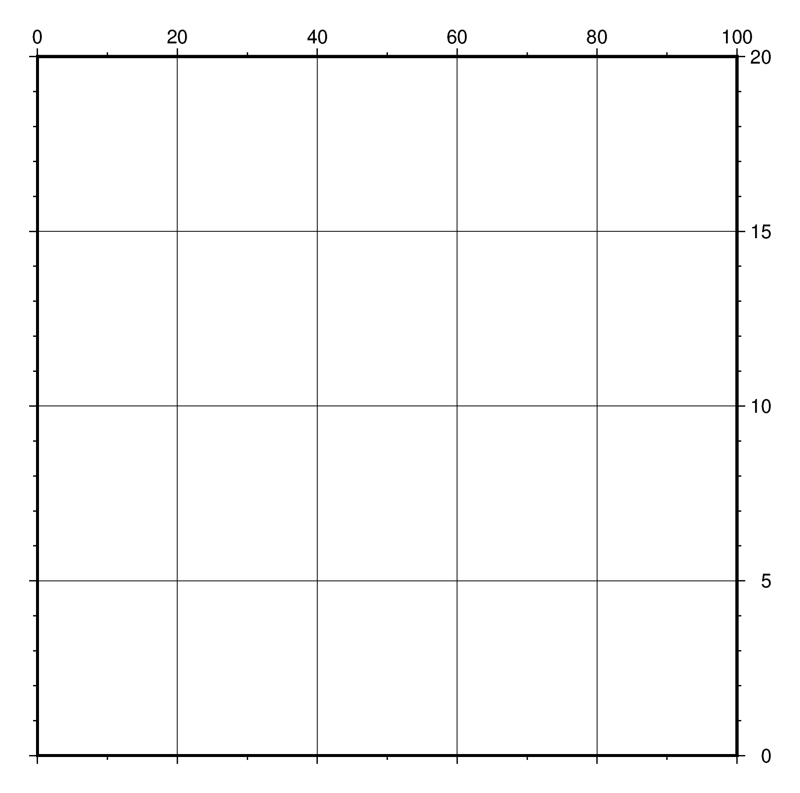
import pygmt
fig = pygmt.Figure()
fig.basemap(projection='X12c/12c', region=[0, 100, 0, 20],
frame = ['WS', 'xafg', 'yafg'])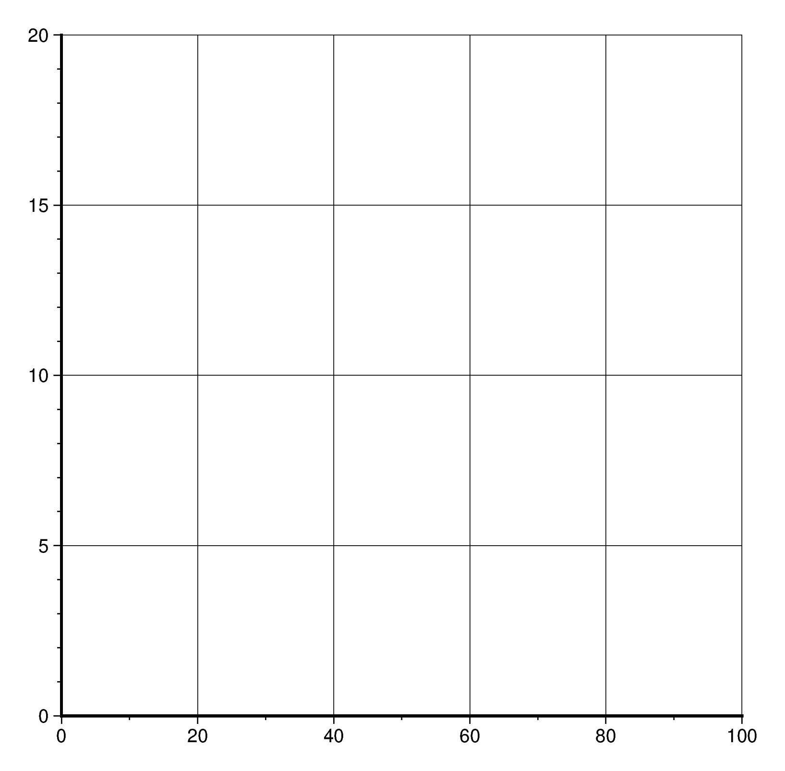
import pygmt
fig = pygmt.Figure()
fig.basemap(projection='X12c/12c', region=[0, 100, 0, 20],
frame = ['WS', 'xafg', 'yafg'])import pygmt
fig = pygmt.Figure()
fig.basemap(projection='X12c/12c', region=[0, 100, 0, 20],
frame = ['WS', 'xaf', 'yaf'])import pygmt
fig = pygmt.Figure()
fig.basemap(projection='X12c/12c', region=[0, 100, 0, 20],
frame = ['WS', 'xa', 'ya'])import pygmt
fig = pygmt.Figure()
fig.basemap(projection='X12c/12c', region=[0, 100, 0, 20],
frame = ['WS', 'x', 'y'])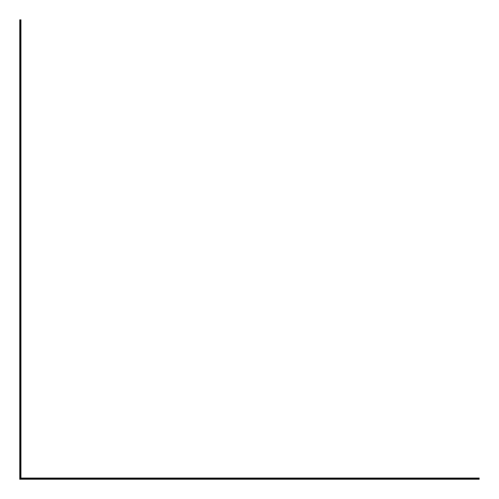
a, f, g の設定の後に + 記号と以下のフラグを追加することで，軸をカスタマイズすることができます．
+l<label> 軸ラベルの追加．a が表示される軸方向に文字列 <label> が表示されます．+p<prefix> a の前に文字列がつきます．+u<unit> 単位文字列の追加．a の数値に単位がつきます．+a<angle> 軸の文字列を <angle> だけ回転させますすべてのオプションを有効にした例を示します．
fig = pygmt.Figure()
fig.basemap(projection='X12c/12c', region = [0, 100, 0, 20],
frame = ['S', 'xa20f10+lSpeed+pc=+u km/s+a-30'])
fig.show(crop=0.5, width="80%")
機能の例ということで紹介しましたが，実際にこのようにグラフを描くことは（すくなくとも筆者の専門の地震学界隈では）あまりない，と思います．数値に変数名や単位をつけるかわりにラベルに単位を付けるほうが一般的でしょう．
対数軸の場合，a, f, g はそれぞれ 1, 2, 3 の数値をとります．実例を見てみましょう．
fig = pygmt.Figure()
fig.basemap(projection='X12cl/0.5c', region=[1, 100, 0, 1],
frame = ['S', 'xa1f1g1'])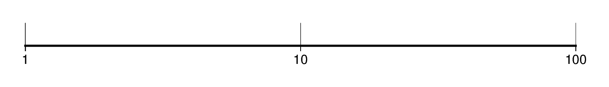
1 の場合は軸の数値が \(\times 10\) 倍ごとに軸情報が表示されます．
fig = pygmt.Figure()
fig.basemap(projection='X12cl/0.5c', region=[1, 100, 0, 1],
frame = ['S', 'xa2f2g2'])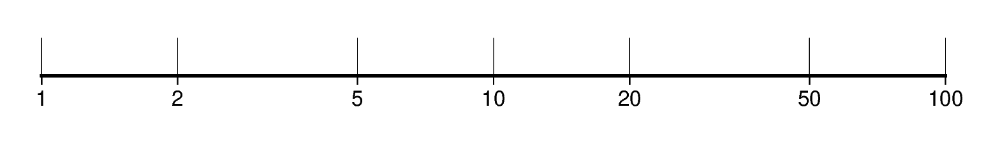
2 の場合は各桁の \(\times 1, \times 2, \times 5\) 倍ごとに軸情報が表示されます．
fig = pygmt.Figure()
fig.basemap(projection='X12cl/0.5c', region=[1, 100, 0, 1],
frame = ['S', 'xa3f3g3'])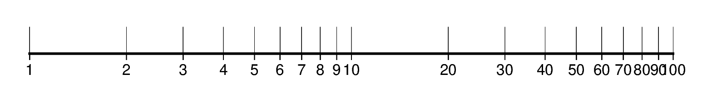
3 の場合は \(\times 1 \sim\times 9\) まですべてに軸情報が表示されます．
fig = pygmt.Figure()
fig.basemap(projection='X12cl/0.5c', region=[1, 100, 0, 1],
frame = ['S', 'xa1f3g3p'])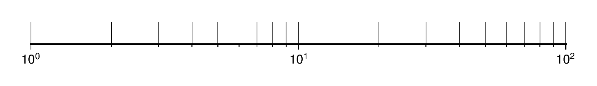
軸情報の最後に p が付与されると，annotationが \(10^X\) の形式で表示されます．ただし，a1 以外では正しく動作しません．
表示したい桁数の範囲が非常に広い場合でも，10倍より広い間隔でannotationを表示することはできません．たとえば以下の例では範囲が広すぎ，annotation同士が非常に近接して読みづらくなってしまっています．
fig = pygmt.Figure()
fig.basemap(projection='X12cl/0.5c', region=[1, 1e25, 0, 1],
frame = ['S', 'xa1f1g1p+lsome value with vast dynamic range'])
fig.show(crop=0.5)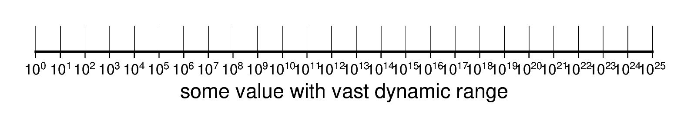
このような場合は，後述のカスタム軸を用いるのがよいでしょう．
軸オプションの x, y 軸名の前に p あるいは s を付すことで，軸を primary と secondary の2つに分けて描画することができます．primaryのほうが座標軸に近い部分に小さなフォントで，secondaryのほうが離れて大きなフォントで，それぞれ表示されます．ラベルはsecondaryのものしか表示されません．
以下の例は，primaryを20ごとに，secondaryを100ごとに表示したものです．+l オプションはあえて両方につけていますが，primaryのほうは表示されていないことが確認できるでしょう．
fig = pygmt.Figure()
fig.basemap(projection='X12c/12c', region = [0, 200, 0, 20],
frame = ['S', 'pxa20f10+lPrimary', 'sxa100f50+lSecondary'])
fig.show(crop=0.5, width="80%")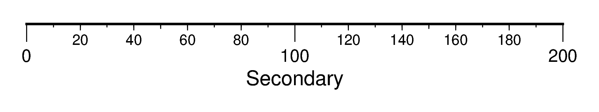
あえてprimaryとsecondaryの役割を逆転させてみると以下のような軸になります．あまり有用ではなさそうです．
fig = pygmt.Figure()
fig.basemap(projection='X12c/12c', region = [0, 200, 0, 20],
frame = ['S', 'sxa20f10+lSecondary', 'pxa100f50+lPecondary'])
fig.show(crop=0.5, width="80%")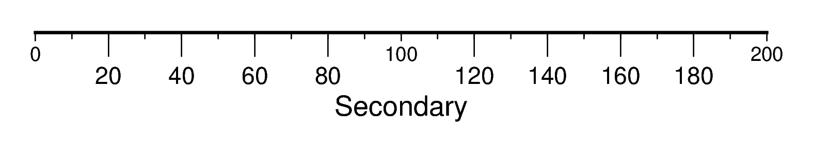
（執筆中です．次回更新までお待ちください）
時間軸設定の記号．GMT公式マニュアル に基づく．（編集・検証中）
| flag | 単位 | 説明 |
|---|---|---|
Y |
年 | 4桁 |
O |
月 | FORMAT_DATE_MAP 次第 |
U |
週番号 | FORMAT_DATE_MAP 次第 |
K |
曜日 | 言語設定次第 |
H |
時 | FORMAT_CLOCK_MAP 次第 |
D |
日 | FORMAT_DATE_MAP 次第 |
M |
分 | FORMAT_CLOCK_MAP 次第 |
S |
秒 | FORMAT_CLOCK_MAP 次第 |
y |
年 | 2桁 |
o |
月 | 1-12 の2桁数値 |
u |
週番号 | 1-53 の2桁数値 |
k |
曜日 | 1-7 の数値 (TIME_WEEK_START で月曜=1に設定されているが，変更もできる） |
d |
日 | FORMAT_DATE_MAPの設定により，1-31 の数値もしくは1-366の数値 |
R |
週, 日 | d と同じだが週番号も記載 |
h |
時 | 0-24 の2桁数値 |
m |
分 | 0-60 の2桁数値 |
s |
秒 | 0-60 の2桁数値 |
PyGMTのマニュアルには直接は書かれていませんが，本家GMTには custom axes（カスタム軸）というより柔軟に軸情報を設定できる機能が解説されていて，それがそのままPyGMTでも使えます．
カスタム軸は，任意の位置にtickや数値を配置でき，それらは等間隔である必要もありません．x軸，y軸それぞれに対して軸情報を記載したファイルを作成し，それを frame の軸情報に c オプションで呼び出します．少々煩雑なので，具体例から紹介します．
x = np.linspace(0, 2*np.pi, 201)
y = np.sin(x)
fig = pygmt.Figure()
fn_x = 'xannots.txt'
fn_y = 'yannots.txt'
with open(fn_x, 'w') as f:
print(f"0 a 0", file=f)
print(f"{ np.pi/4:8.6f} f ", file=f)
print(f"{ np.pi/2:8.6f} ag @~p@~/2", file=f)
print(f"{3*np.pi/4:8.6f} f ", file=f)
print(f"{ np.pi :8.6f} ag @~p@~ ", file=f)
print(f"{5*np.pi/4:8.6f} f ", file=f)
print(f"{3*np.pi/2:8.6f} ag 3@~p@~/2", file=f)
print(f"{7*np.pi/4:8.6f} f ", file=f)
print(f"{2*np.pi :8.6f} ag 2@~p@~ ", file=f)
with open(fn_y, 'w') as f:
print("-1 ig Negative", file=f)
print(" 0 ig Positive", file=f)
print(" 1 ig", file=f)
fig.plot(projection='X12c/6c',
region = [0, 2*np.pi, -1.1, 1.1],
x = x, y = y,
pen = 'thickest,200/100/100@40',
frame = ['WSen', f'xc{fn_x}',
'pya1f0.5g1', f'syc{fn_y}'])
fig.show(crop=0.5, width="80%")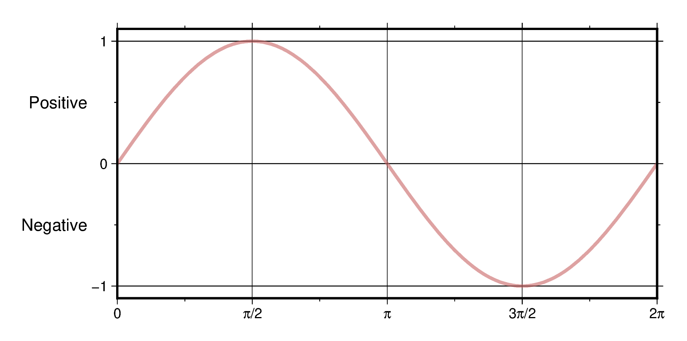
このグラフでは，x 軸では \(\pi / 2\) ごとに annotation （しかも数値ではなく \(\pi\) を用いて）を表示しています．y軸はsecondary axisにの数値ではなく範囲の中央（ここでは -1から0と0から1の間）に Positive, Negativeの文字列を配置しました．これらはラベルではなくてannotation (軸情報の afgのaに相当）で実現されています．
このような軸を実現しているのが，スクリプト中盤で作成しているファイル xannots.txt yannots.txt です．これらのファイルが軸情報で 'xc(x軸ファイル名)', 'yc(y軸ファイル名)' の形式で呼び出されています．
まずはxannots.txtから見てみましょう．
xannots.txt
0 a 0
0.785398 f
1.570796 ag @~p@~/2
2.356194 f
3.141593 ag @~p@~
3.926991 f
4.712389 ag 3@~p@~/2
5.497787 f
6.283185 ag 2@~p@~ このファイルは1列目に軸情報をプロットする位置，2列目に a, f, g の組み合わせ，そして2列目に a が含まれる場合には3列めに annotationとして表示する文字列，がそれぞれ書かれています．文字列部分では，ギリシャ文字を表示するGMT記号 @~ を用いて，アルファベット p に相当する \(\pi\) を表示させています．
yannots.txt
-1 ig Negative
0 ig Positive
1 ig一方，yannots.txt では2列目にグリッド線を表す g のほかに i が使われています．これは interval annotation という記法で，指定された数値の位置の真下ではなく，次の行の値との中間に3列目の文字列を描画する，というものです．時間軸の月名や年の表示にしばしば使われている記法と同じです．interval annotaionでは，「次」の値がないと中間の位置が定まりませんから，3行目には3列目の文字列がない行を付与しています．1列目の数値（1）があってはじめて2行目に指定された Positive の表示される位置が定まる，というわけです．
カスタム軸は情報をファイルで渡す必要があり，そのままですとあとで不要なファイルが残されてしまいます．そこで以下のように tempfile モジュールで一時ディレクトリを作成し，それを with ブロックで表記すれば，ブロックから抜けた時点でディレクトリごとファイルが削除されます．これなら必要な図だけが残り，スマートです．
import tempfile
import os
fig = pygmt.Figure()
# 一時ディレクトリを作成
with tempfile.TemporaryDirectory() as tmpdir:
# 軸情報ファイルは一時ディレクトリの下に作成する
with open(os.path.join(tmpdir, "xannots.txt"), "w") as fpx:
print(f"0 a 0", file=fpx)
print(f"{ np.pi/4:8.6f} f ", file=fpx)
print(f"{ np.pi/2:8.6f} ag @~p@~/2", file=fpx)
print(f"{3*np.pi/4:8.6f} f ", file=fpx)
print(f"{ np.pi :8.6f} ag @~p@~ ", file=fpx)
print(f"{5*np.pi/4:8.6f} f ", file=fpx)
print(f"{3*np.pi/2:8.6f} ag 3@~p@~/2", file=fpx)
print(f"{7*np.pi/4:8.6f} f ", file=fpx)
print(f"{2*np.pi :8.6f} ag 2@~p@~ ", file=fpx)
with open(os.path.join(tmpdir, "yaanots.txt"), "w") as fpy:
print("-1 ig Negative", file=fpy)
print("0 ig Positive", file=fpy)
print("1 ig", file=fpy)
# ファイル名はファイルオブジェクト fp に対して fp.name で参照できる．
# ファイルを閉じたあとでも（変数を上書きしていない限り）大丈夫．
fig.plot(projection='X12c/6c',
region = [0, 2*np.pi, -1.1, 1.1],
x = x, y = y,
pen = 'thickest,200/100/100@40',
frame = ['WSen', f'xc{fpx.name}',
'pya1f0.5g1', f'syc{fpy.name}'])上記の例を執筆してからGMTのマニュアルを見直していたところ，実はカスタム軸を使わなくても radian=\(\pi\) は軸上の数値の代わりに表示できる，ということがわかりました．
fig = pygmt.Figure()
fig.basemap(projection='X12c/12c', region = [-np.pi, 2*np.pi, 0, 1],
frame = ['S', 'xapi2fpi4+langle [rad.]'])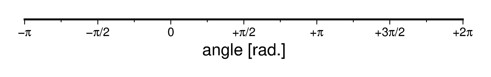
軸情報において，pi で \(\pi\)，pi2やpi4 で\(\pi/2\), \(\pi/4\) を表すようです．